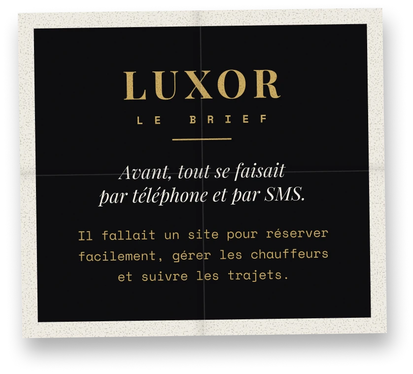
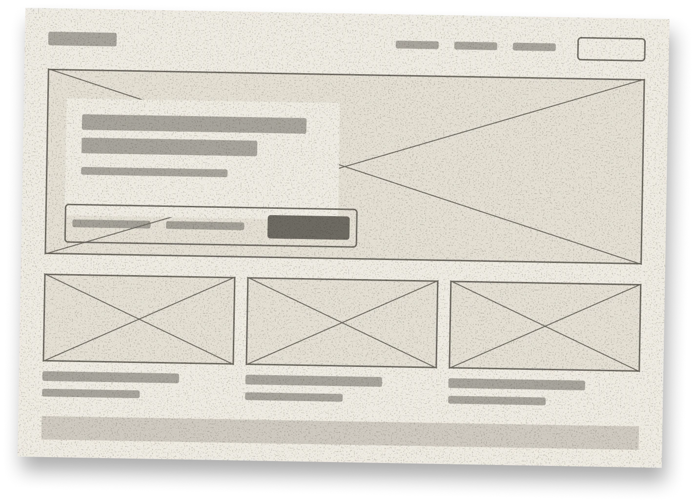
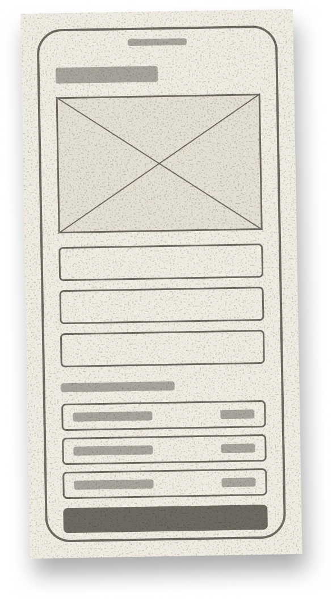
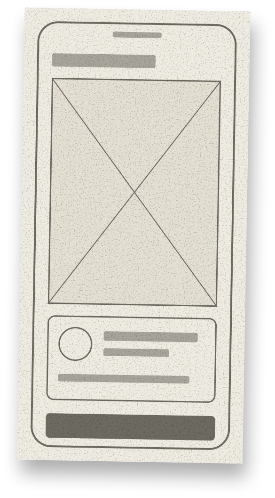
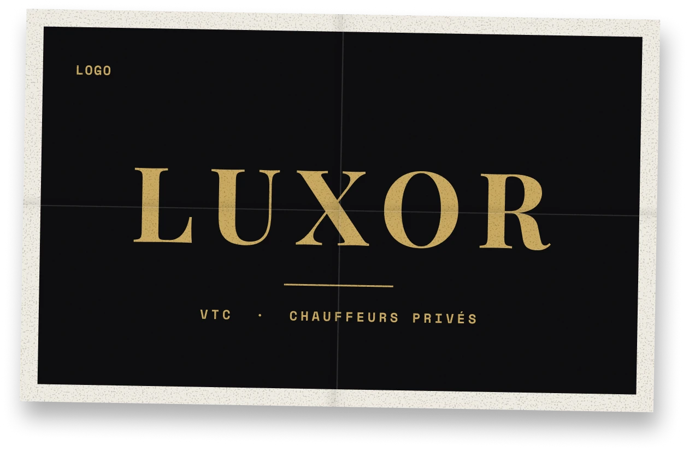
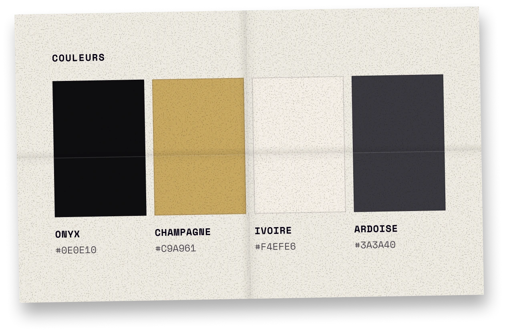
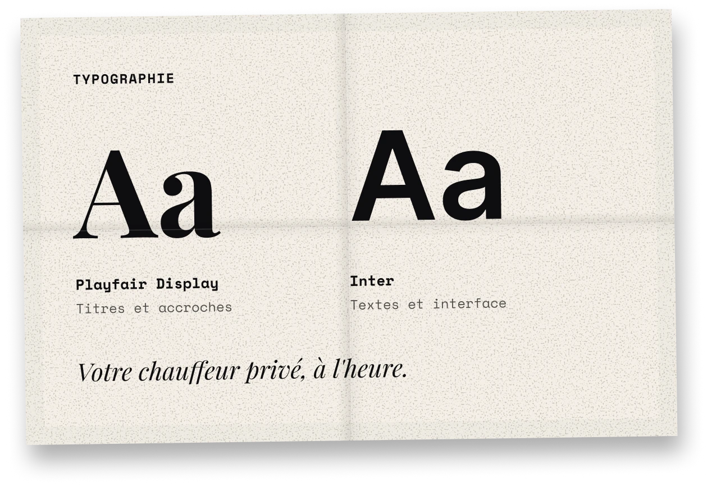
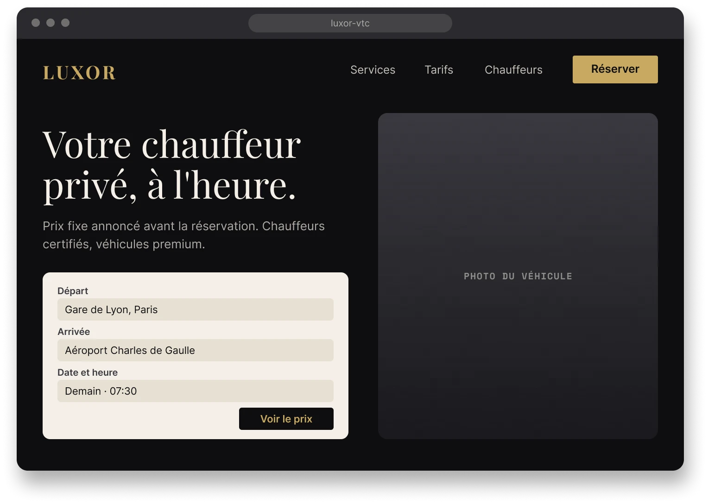
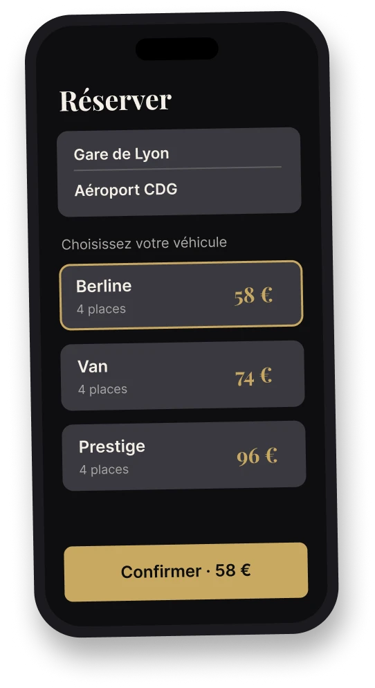
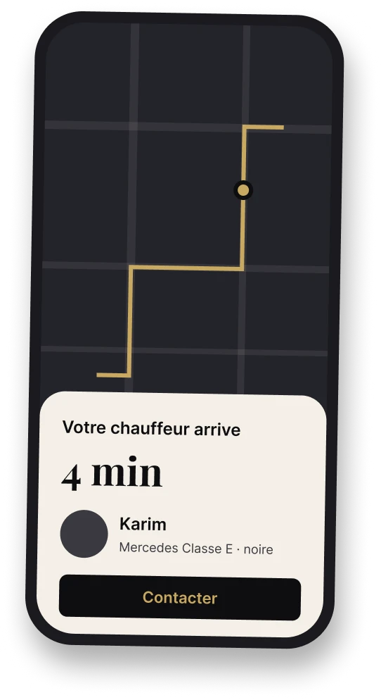

Luxor VTC
C'est quoi ?
Un service de chauffeurs privés haut de gamme. On réserve un trajet, on choisit sa voiture et on suit son chauffeur en direct.

Mon rôle
Pourquoi moi ?
Il fallait quelqu'un qui pense à l'utilisateur et qui sache coder. Je fais les deux, alors j'ai tout géré, de l'idée à la mise en ligne.
Étape 1
Comprendre
J'ai étudié Uber, G7 et Heetch. Les clients veulent surtout un prix clair et un chauffeur à l'heure.
Étape 2
Définir
J'ai listé les écrans et le chemin du client. Le but était de réserver en moins d'une minute.
Étape 3
Concevoir
J'ai dessiné des croquis, puis les maquettes et les couleurs, en commençant par le mobile.
Étape 4
Développer
J'ai codé le site avec Symfony et React, puis je l'ai testé.
Étape 5
Livrer
J'ai mis le site en ligne et automatisé ses mises à jour.






Univers
Élégant. Ponctuel. Discret.
Une marque sobre et chic, qui donne confiance tout de suite. Noir et doré, comme une voiture de luxe.



Luxor VTC · 2026
Voir le site →Le site est en ligne. Réservez un trajet et testez-le vous-même.
Code source sur GitHub ↗